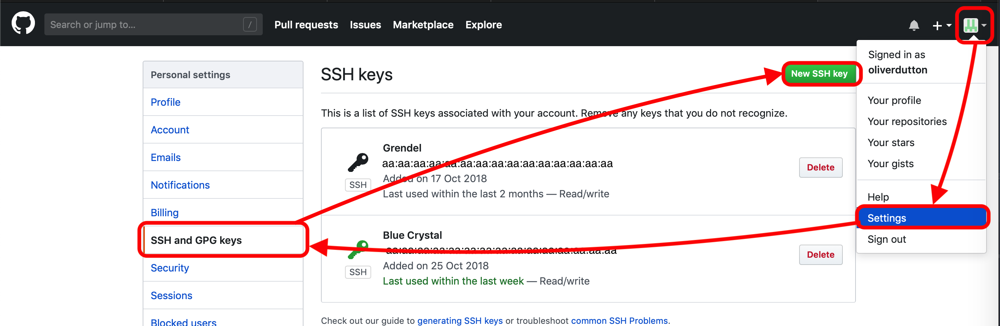
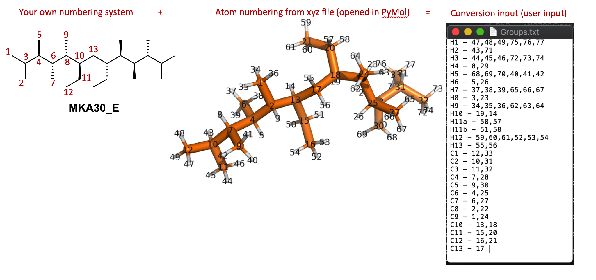

~.. _user_guide:
User Guide¶
Basics¶
*Using the command line*
Learn to use the command line, complete the tutorial at https://www.codecademy.com/learn/learn-the-command-line
Commands you need to type into your terminal window (after logging in to BlueCrystal) are written in block quotes as below. Notes are preceeded by a #:
type_this_into_terminal_window # Then press enter to run command # Helpful extra instructions, do not type this into the terminal window
Must learn basic unix commands,
pwd # prints the current folder you're in ls # List folders in your current directory (directory is a fancier name for folder) cd folder_name # Moves you into the folder called folder_name (assuming that in your current directory)
When you run the later commands you need to make sure you’re running them from a particular folder you’ve set up for the molecules
*Vim*
Learn to use Vim, complete the tutorial at https://www.openvim.com/ before continuing
*Further Notes*
auto-ENRICH is a set of python scripts to assist you in extracting and computing NMR parameters and conformer energies from molecular mechanics results using Gaussian. Find out what Gaussian is if you don’t know.
BlueCrystal is a computing cluster. A room full of computers you can get to do calculations for you. We make Gaussian input files (.com files) specifying a certain thing we want Gaussian to do then submit them to BlueCrystal for random computers in the BlueCrystal to run and give back the answers. For reference your computer (probably) has 4 cores, on BlueCrystal you can sometimes use up to 400 cores at once. Running DFT is computationally very expensive so doing it on your personal laptop would take forever - hence we use BlueCrystal.
We’d recommend you use Maestro (the free academic license version, most up to date version please) to view molecules. The .xyz files generated in some of auto-ENRICH should be draggable directly into Maestro to view.
Basics: Windows computer specifics¶
*WinSCP*
Open WinSCP – This lets you transfer files from your area to BlueCrystal and vice versa. i. Host name: grendel.chm.bris.ac.uk ii. Username: UOB username iii. Save settings and Login iv. When prompted log in with your UOB username and BlueCrystal password v. You can then use the save session the next time you open WinSCP to avoid entering the host name again
*PuTTY*
Open PuTTY – This lets you interact with BlueCrystal via a terminal. i. Host Name: grendel.chm.bris.ac.uk ii. Modify setting: Connection – SSH – X11 – Yes to Enable X11 Forwarding iii. Save settings in the “Session” tab iv. Login as: UOB username v. Type in your BlueCrystal password when prompted (the password won’t be displayed onscreen) vi. You can then use the saved session the next time you open WinSCP to avoid entering the host name again
When we say ‘log in’ to BlueCrystal we will mean using PuTTY
Install on BlueCrystal3¶
0 Get IT to allow you to use Gaussian on BlueCrystal, email hpc-help@bristol.ac.uk asking them to set up and give your account access to use Gaussian
1 Get access to auto-ENRICH by creating an account on GitHub.com (free one, obviously) then email your GitHub username (and ask for access to auto-ENRICH) to will.gerrard@bristol.ac.uk
2 Set up your environment:
2.0 Log in to BlueCrystal and move to your home directory
cd # This moves you to your home directory, this is basic unix command line, please learn.2.1 Load the conda package. This allows you to easily import modules (packs of pre-built code from other people) into Python (the programming language) to use.
module load languages/python-anaconda-5.0.1-2.7 # You can copy and paste these commands rather than slowly typing them out BUT only one line at a time (to execute each command separately) # Note if on Windows using PuTTY terminal: paste is right clicking inside the PuTTY window not by pressing Ctrl-V like you normally would2.2 Create an environment (Basically just a list of the modules we want to use, The piece of software we use Anaconda (conda for short) will load them every time you activate that environment) using Anaconda. We’re going to name the environment ‘myenv’ for simplicity
conda create --name myenv # Press y (and sometimes enter if it hasn't done anything) when things ask you if you want to do the command you've just asked to do.2.3 Install modules to the environment we just created. We want to install openbabel and numpy. Numpy and SciPy are python modules that allows us maths easily in Python, while OpenBabel is a chemistry related module. The auto-ENRICH scripts use these modules.
conda install -c openbabel -n myenv openbabel conda install -n myenv numpy scipy2.4 Activate the environment you just made, this should put add “(myenv)” to the far left of where you input commands
source activate myenv
3 Set up Github and get a copy of auto-ENRICH:
3.1 On BlueCrystal: Find your ssh key, we do this by first going to your home folder in BlueCrystal then opening .ssh/id_dsa.pub (a text file) containing your key. vim is a very simple text editing package, you should know how to use it, if not please search vim and learn.
vim ~/.ssh/id_dsa.pub # vim bit at the start means use vim (text editing package) to open the file ~/blah. The ~/ is unix command line shorthand for your 'root' directory (the one you move to when you cd, it's basically your home folder. If you don't know what cd does, please go back to start and do a unix command line tutorial).
Example ssh key
3.2 Copy the key (all that text) then exit vim
# Copy the key... # If using Windows and are using PuTTY then highlighting and right click will copy the text # Press the Esc key :q! # Closes file (without editing), this is basic use of vim, you should understand this.3.3 On Normal Computer: Login to Github.com (after making an account) then go to Settings - SSH and GPG keys - New SSH key and paste the key and give it a simple title like BlueCrystal3. Github is a website that we store our auto-ENRICH code on, by giving it your SSH key we are allowing your BlueCrystal account to access your Github account.
Navigate through github.com to input ssh key
3.4 On BlueCrystal: Enable git
module load tools/git-2.18.03.5 Copy the auto-ENRICH files, it’ll make a folder called auto-ENRICH containing all the files.
git clone --recurse-submodules -b release_1 git@github.com:wg12385/auto-ENRICH.gitNote We’ve done all this rather than just copying a folder ‘normally’ to your BlueCrystal account because Github is special. If auto-ENRICH is updated to fix bugs and add functionality you can update your version by cd’ing into the auto-ENRICH folder and typing:
# Double check you're actually in your auto-ENRICH folder, use 'pwd' to double check (basic unix command line, please learn.) then git pull --recurse-submodules -b origin release_1 # This pulls the version of auto-ENRICH from GitHub we have called release_1 (You don't need to know about the recurse submodules bit)
4 Get BlueCrystal to automatically set up things for auto-ENRICH every time you log in BlueCrystal.
4.1 Open ~/.bashrc, this is a script that runs automatically when you log in to BlueCrystal3 (Just a unix command line thing, nothing to do with auto-ENRICH)
vim ~/.bashrc # Open the .bashrc file in vim (text editor)4.2 Tell BlueCrystal to automatically load python and Git and then activate your conda environment every time you log in by adding the following lines to .bashrc (file you just opened) at the bottom
(i key) # pressing i key allows you to edit files in vim, you should know this, if you don't, look up a vim tutorial #Add following lines to the file (at the bottom) module load languages/python-anaconda-5.0.1-2.7 module load tools/git-2.18.0 source activate myenv # then exit vim, writing your changes to the file. Esc key exits the edit mode. The w is write, q is quit. (Esc key) :wq
Run on BlueCrystal3¶
auto-ENRICH automates moving from a conformational search output to getting out NMR parameters. Save the output of your conformational search to one .xyz file (that contains lots of conformers) for a particular molecule. We want to make a folder for each molecule which we then run the DFT for.
1 Make a folder with the molecule name and put your .xyz file in it, cd into that folder
2 Copy the preferences file from the auto-ENRICH folder. This is a simple file where you can write all the exact parameters you want to do the DFT with (Functional, Basis set, Grid size, Convergence Criteria, Use of frequency calculation, Redundant conformer elimination options, blah….)
cp ~/auto-ENRICH/ENRICH.prefs ./ #The 'cp' is telling unix command line to copy then we put location of file we want to copy ('~/auto-ENRICH/ENRICH.prefs'), # and then where we want to copy it to, in this case your current directory ('./') # Again, unix command line tutorial.
2.0 Chat to someone about the parameters you should do your DFT with and find out what all the preferences in the ENRICH.prefs file actually means. Learn what DFT is.
3 Edit the preferences (for this particular molecules DFT), if you want to run all your calculations in a specific way then we suggest you edit ENRICH.prefs in the auto-ENRICH to your own personal preferences to save time in future
vim ENRICH.prefs # Press the i key then edit the file # After editing... # Press the Esc key to exit edit mode :wq # This saves and closes the file, you should have learnt vim.
For solvent option it only takes specific words, for example chloroform, dmso, water, toluene, n-hexane (but not cdcl3, this will not run) If you want to use an odd solvent please consult http://gaussian.com/scrf/ -> More -> Solvents where there’s a list
4 (While in folder for your molecule) Create optimisation jobs based on your choices in ENRICH.prefs by running xyz_to_opt.py script and telling it the name of your xyz file, eg if the xyz file was molecule.xyz
python ~/auto-ENRICH/RUN/xyz_to_opt.py molecule.xyz # tilde '~' is like ../ but it goes back to your home directory, the one you move to when you type 'cd' from any folder on the terminal
The script automatically looks and produces com files (Gaussian DFT job submission files) for all the structures in all the xyz files in your current folder
This will produce an optcom folder filled with .com files and .qsub file(‘s) What auto-ENRICH has done is make a load of input files (for each structure in the .xyz file) for Gaussian to run saying ‘do a geometry optimisation (and then frequency calculation) with this starting structure based on the preferences we put in ENRICH.prefs’ The com files are the just Gaussian input files. The qsub file is so you can submit those gaussian com files as jobs on BlueCrystal.
Please open and look at a couple of the optcom files to see what Gaussian input files look like and that you understand what (most) of the lines of the input file actually means. Also have a look at the .qsub file, try understand what it’s doing.
5 Submit job files so BlueCrystal will run all the Gaussian submission files you’ve written. .qsub files are named after the .xyz file you started with so the below code is for if you have ‘molecule1.xyz’ as your conformer containing xyz file. If you’ve forgotten the name of your xyz file a simple ‘ls’ in the command window will show you (again basic cmd line unix)
# qsub molecule1_OPT_0.qsub #If you're submitting over 50 conformers you will have several of these to submit # qsub is the command (it means submit to the BlueCrystal queue) then the .qsub file is the file you want to submit qsub molecule1_OPT_1.qsub qsub molecule1_OPT_2.qsub # ... ... ...
Each .qsub file submits 50 (or less) of the Gaussian input files (.com’s) as jobs to run on the computing cluster (BlueCrystal) with a particular walltime, no. processors. Please find out what walltime means.
6 Wait for your calculations to complete…, You can check on their status on grendel (whether queueing/running, job which have finished will disappear)
#To check on status of your calculations type qstat -nu <username> -t # example username is sj18703 it'd be qstat -nu sj18703 -t
7 Run move_complete.py to sort your calculations into successes (they’ll be moved to a folder called optlog) and fails (failed folder)
python ~/auto-ENRICH/RUN/move_complete.py
8 Create Gaussian NMR input files by running opt_to_nmr.py. This will also create a file called ‘population_information.txt’ containing conformer energies and populations
python ~/auto-ENRICH/RUN/opt_to_nmr.py
This will produce an nmrcom folder filled with .com files and .qsub file(‘s) similar to before. There will be a redundant conformer elimination (with the threshold you’ve specified in ENRICH.prefs) to see if any of the structures you have optimised from your .xyz file have converged to the same conformer (Note: Conformers are energy minima, you submitted energy minima based off of molecular mechanics, these are not be minima by DFT, you have submitted .xyz files with are molecular mechanics conformers as (hopefully) good start points for finding DFT conformers [for a particular basis set, functional, grid etc.]). You should open the .xyz file produced in the new ‘OUTPUT’ folder (ideally in Maestro) to check the threshold is appropriate and that we’ve actually removed all duplicates and not just very similar conformers, you should adjust the threshold accordingly.
This will produce an nmrcom folder filled with .com files and .qsub file(‘s) just like optimisation did
9 Submit job files for NMR parameter calculation
qsub molecule1_NMR_0.qsub #If you're submitting over 50 conformers you will have several of these to submitting # qsub is the command (it means submit to the BlueCrystal queue) then the .qsub file is the file you want to submit qsub molecule1_NMR_1.qsub qsub molecule1_NMR_2.qsub # ... ... ...
10 Wait for the calculations to complete…
11 Run move_complete.py to sort your calculations into successes (they’ll be moved to a folder called nmrlog) and fails (failed folder)
python ~/auto-ENRICH/RUN/move_complete.py
12 Run nmr_process.py to get the raw DFT NMR experimental measurables out, this will be numbered based on atoms in the .xyz file and assumes all atoms inequivalent on NMR timescale (doesn’t deal with methyls/symmetry). This will produce an OUTPUT folder with the .xyz files for all your DFT geometry optimised conformers
python ~/auto-ENRICH/RUN/nmr_process.py
13 Produce equivalency file: Open one of the conformers from your original input .xyz in Maestro (or PyMol or any xyz viewer), In the sidebar go to H - everything then S - sticks and then L - atom identifiers - ID. While in your molecules folder make a file called “Groups.txt” and make list of “your own label” - numbers of atoms that are equivalent (eg H’s on methyl groups) .
# This is how you'd make the .txt file using vim on BlueCrystal, but using Window notepad (on your own computer, not on BlueCrystal side) is fine vim Groups.txt # Input all the equivalency eg # H1 - 72,73,74 (No blank lines at the end please) (Esc key) :wq # save and close fileFormat for doing equivalency maths, note this molecule has C2 symmetry so has funky numbering
14 Run nmr_process.py with equivalency file by specifying equiv as an argument. This will produce two more files in OUTPUT ending in _equiv.txt and _equiv_pretty.txt, The pretty one will show various J couplings > 0.5 Hz and NOEs.
python ~/auto-ENRICH/RUN/nmr_process.py equiv
Epilogue Deal with the failures in the failed folder by resubmitting them manually, talk to someone with more experience + read FAQ
Install on Grendel¶
This is very similar to installing on BlueCrystal but with some slight differences
1 Get read access to this repository (email will.gerrard@bristol.ac.uk with your github account details or request access through github)
2 Set up your environment:
2.0 Log in to grendel and move to your home directory
cd # This moves you to your home directory2.1 Install miniconda
2.1.1 Downloading this installer
2.1.2 Move install file to grendel using WinSCP (or Cyberduck if on a Mac) to your home directory (the folder you’re in when you log in). Help can be found here for WinSCP
2.1.3 Log in to grendel (through PuTTY on Windows or terminal on Mac). Help can be found here
2.1.4 Run the installer and then enter yes for all questions
bash Miniconda2-latest-Linux-x86_64.sh # questions pop up, say yes to all yes yes yes # yes ..., til it's all over2.2 Create a conda environment
conda create --name myenv2.3 Install openbabel and numpy
conda install -c openbabel -n myenv openbabel conda install -n myenv numpy scipy2.4 Activate the environment you just made, this should put add “(myenv)” to the far left of where you input Commands
source activate myenv
3 Set up Github and get a copy of auto-ENRICH:
3.1 Find your ssh key, we do this by first going to your home folder in grendel then opening .ssh/id_rsa.pub (a text file) containing your key
vim .ssh/id_rsa.pubExample ssh key
3.2 Copy the key (all that text) then type :q! to exit
:q! # Close file3.3 Login to Github.com then go to Settings - SSH and GPG keys - New SSH key and paste the key and give it a simple title like Grendel
Navigate through github.com to input ssh key
3.4 Copy auto-ENRICH files, it’ll make a folder called auto-ENRICH containing all the files
git clone --recurse-submodules -b release_1 git@github.com:wg12385/auto-ENRICH.git
4 Automatically set up things so when you log in to be able to run auto-ENRICH. If you don’t want to do this type the commands in step 4.2 into your terminal everytime you want to run auto-ENRICH
4.1 Open .bashrc, this is a script that runs automatically when you log in to grendel
vim .bashrc4.2 Tell grendel to automatically load python and git and then activate your conda environment.
source activate myenv
Run on Grendel¶
auto-ENRICH automates moving from a conformational search output to getting out NMR parameters. Save the output of your conformational search to one .xyz file (that contains lots of conformers) for a particular molecule
1 Make a folder with the molecule name and put your .xyz file in it, cd into that folder
2 Copy the preferences file from the auto-ENRICH folder then open it and decide what you want to run. If the auto-ENRICH folder is 2 directories above your molecules folder (which you are now in) type:
cp -rf ~/auto-ENRICH/ENRICH.prefs ./ #The cp means copy, first place is where it's copying from, #the other is where its copying to, your current directory #This applies for all that follows
3 Edit the preferences (for this particular molecules DFT), if you want to run all your calculations in a specific way then we suggest you edit ENRICH.prefs in the auto-ENRICH to your own personal preferences to save time in future
vim ENRICH.prefs # Press the i key then edit the file :wq # Save and then close the file
4 Create geometry optimisation and frequency correction input files for Gaussian based on your choices in ENRICH.prefs by running xyz_to_opt.py script from the folder containing your .xyz file
python ~/auto-ENRICH/RUN/xyz_to_opt.py
This will produce an optcom folder filled with .com files and .qsub file(‘s)
5 Submit job files for optimisation and frequency correction (conformer relative energies)
bash molecule1_OPT_0.qsub #If you're submitting over 50 conformers you will have several of these to submitting bash molecule1_OPT_1.qsub bash molecule1_OPT_2.qsub # ... ... ...
6 Wait for your calculations to complete…, You can check on their status on grendel (whether queueing/running, job which have finished will disappear)
#To check on status of your calculations type qstat -nu <username> -t # example username is sj18703
7 Run move_complete.py to sort your calculations into successes (they’ll be moved to a folder called optlog) and fails (failed folder)
python ~/auto-ENRICH/RUN/move_complete.py
8 Create NMR input files by running opt_to_nmr.py. This will also create a file called ‘population.txt’ containing conformer energies
python ~/auto-ENRICH/RUN/opt_to_nmr.py
This will produce an nmrcom folder filled with .com files and .qsub file(‘s) There will be a redundant conformer elimination (with the threshold you’ve specified in ENRICH.prefs) to see if any of the structures you have optimised from your .xyz file have converged to the same conformer (Note: Conformers are energy minima, you submitted energy minima based off of molecular mechanics, these are not be minima by DFT, you have submitted .xyz files with are molecular mechanics conformers as (hopefully) good start points for finding DFT conformers [for a particular basis set, functional, grid etc.]). You should open the .xyz file produced in the new ‘OUTPUT’ folder (ideally in Maestro) to check the threshold is appropriate and that we’ve actually removed all duplicates and not just very similar conformers, you should adjust the threshold accordingly.
9 Submit job files for NMR parameter calculation
bash molecule1_NMR_0.qsub #If you're submitting over 50 conformers you will have several of these to submitting bash molecule1_NMR_1.qsub bash molecule1_NMR_2.qsub # ... ... ...
10 Wait for the calculations to complete…
11 Run move_complete.py to sort your calculations into successes (they’ll be moved to a folder called nmrlog) and fails (failed folder)
python ~/auto-ENRICH/RUN/move_complete.py
12 Run nmr_process.py to get the raw DFT NMR experimental measurables out, this will be numbered based on atoms in the .xyz file and assumes all atoms inequivalent on NMR timescale (doesn’t deal with methyls/symmetry). This will produce an OUTPUT folder with the .xyz files for all your DFT geometry optimised conformers
python ~/auto-ENRICH/RUN/nmr_process.py
13 Produce equivalency file: Open one of the conformers from your original input .xyz in PyMol (normally, not in terminal), In the sidebar go to H - everything then S - sticks and then L - atom identifiers - ID. While in your molecules folder make a file called “Groups.txt” and make list of “your own label” - numbers of atoms that are equivalent (eg H’s on methyl groups) .
# This is how you'd make the .txt file in terminal, but using notepad is fine vim Groups.txt # Input all the equivalency eg # H1 - 72,73,74 (no gaps between numbers and commas) :wq # save and close fileFormat for doing equivalency maths, note this molecule has C2 symmetry
14 Run nmr_process.py with equivalency file by specifying equiv as an argument. This will produce two more files in OUTPUT ending in _equiv.txt and _equiv_pretty.txt, The pretty one will show various J couplings > 0.5 Hz and NOEs.
python ~/auto-ENRICH/RUN/nmr_process.py equiv
Epilogue Deal with the failures in the failed folder by resubmitting them manually, talk to someone with more experience + read FAQ
Miscellaneous¶
PANIC: NOEs method to work in tandem with auto-ENRICH¶
I: Irradiated protons, S: Observed protons, \(i\): Conformer.
\(r_{(I_{a}, S_{b})} =\) Distance between irradiated proton \(I_{atom a}\) and observed proton \(S_{atom b}\)
\(p_{i} =\) Population of conformer \(i\)
\({n_{I}} =\) Number of different (static) protons positions the irradiated atom interconverts between on NMR timescale, e.g. 3 for Me H’s
For use with the refinement script (not yet completed) to process the NOE data you need to:
Set the integral of the irradiate proton to \({n_{I}} * 1000\)
Measure the integral, \(\nu_{raw}\) to the other protons (Only integrals > 0.5% of 1000 should be recorded as valid due to spin diffusion effects)
The refinement script with divide this number by \(n_{I} n_{S}\) to get a scaled integral \(\nu_{scaled}\), this should then obey: